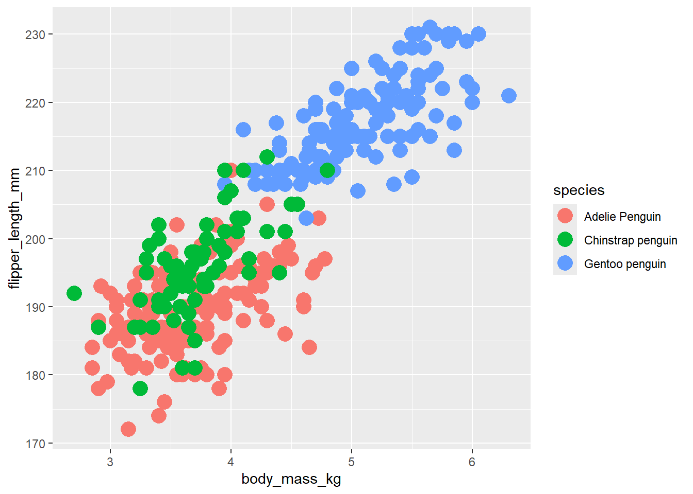
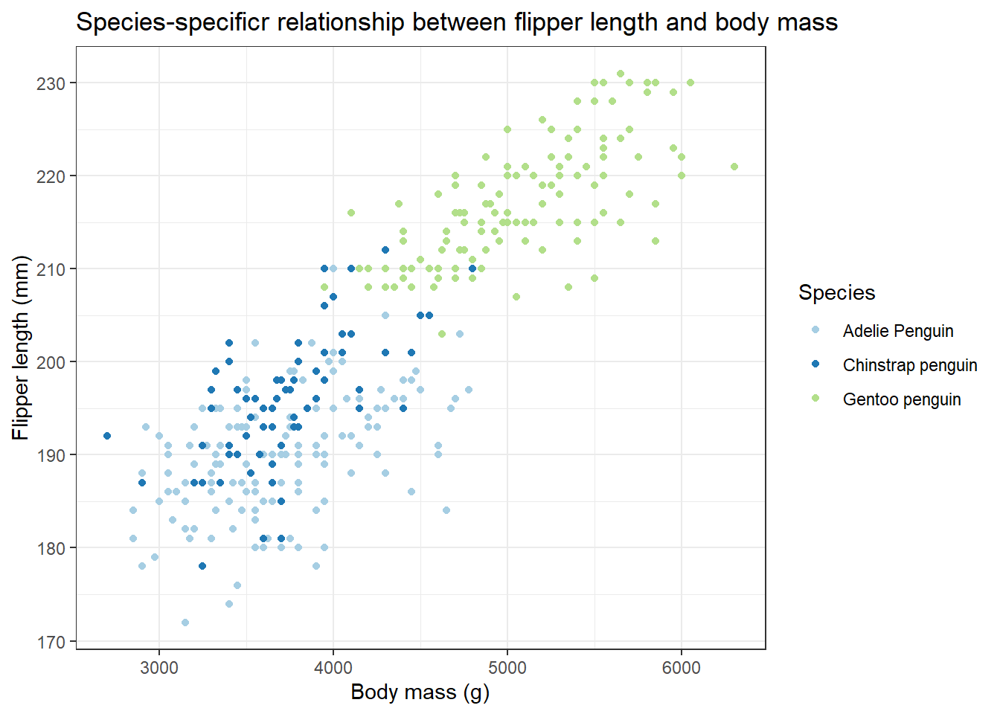
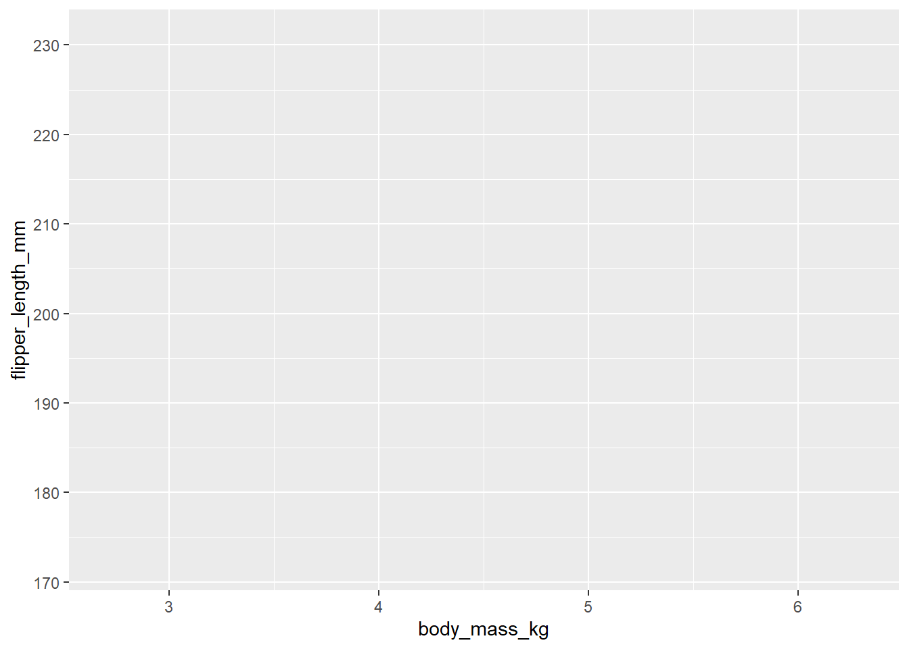
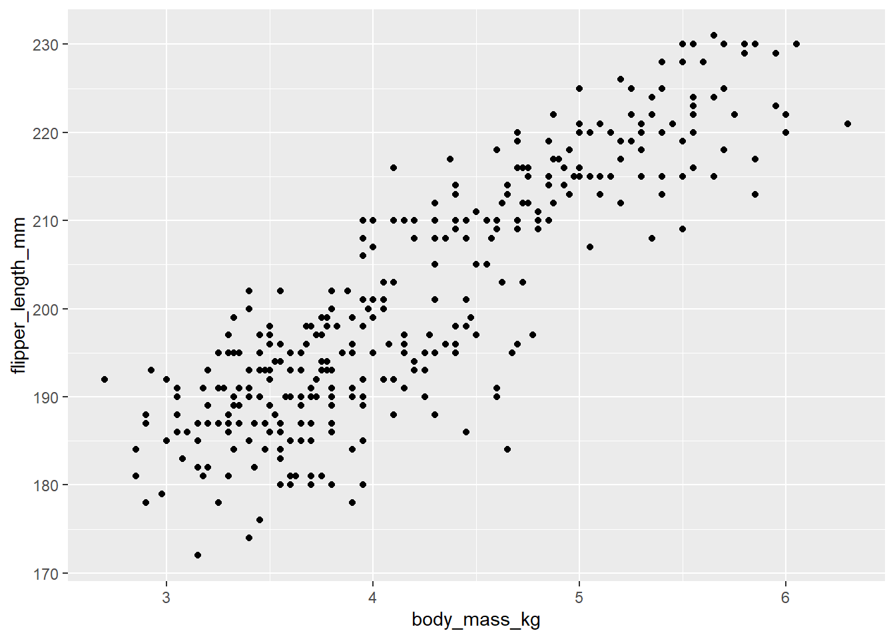

Bring Your Own Data (BYOD) Series
Summarizing and Visualizing your data in R
1 Workshop goals
The goal of this workshop is to provide the tools and hands-on experience necessary so that participants are comfortable importing and tidying-up their data in R, creating summaries, and constructing publication-quality figures. We will also explore simple regression models as time allows.Throughout this workshop will use the syntax of the tidyr packages, which offers an efficient way of coding and building complexity in data manipulation steps while retaining coding organization simplicity.
Note that some of the content presented here was inspired by some of the courses presented at MDH R Camp.
2 Loading libraries and reading-in the data
In this section, we will learn about the different packages that we will be using in this workshop, and will explore different functions for reading files into r.
| Package | Purpose |
|---|---|
| readr | Read delimited files |
| readxl | Read excel files |
| tidyr | Tidy messy data |
| ggplot2 | Create elegant data visualisations using the grammar of graphics |
| tidyverse | Load the packages above and many others useful manipulating and visualizing data |
2.1 Let’s load packages and read-in data!
# Load library
library(tidyverse) # this automatically loads readr, readxl, tidyr, etc.
# we can check what packages were loaded by running the following command line:
tidyverse_packages()2.2 Let’s load a few datasets in different formats
mydat_csv <- read_csv("data/penguin_data_final.csv") # load a .csv file into your R environment
mydat_xls <- read_excel("data/penguin_data_final.xlsx") # load a .xlsx file into your R environmentYou can look in the environment and make sure that the files were loaded properly! We will also demonstrate ways to explore your data in the next section.
2.3 Now we are going to load the dataset for today’s demonstration.
The palmerpenguins packages was created by Allison Horst, Alison Hill, and Kristen Gorman as a tool for teaching data manipulation and analysis techniques in R. In the following sections we will explore the data available within the packages, and we learn to manipulate and analyze the data using a variety of tools and techniques.
# install package (once you have installed the package you will not need to run that line)
install.packages("palmerpenguins")
# load library into your R environment.
library(palmerpenguins)
# Get information about the palmerpenguins package:
?palmerpenguins
# Get proper citation for package if we were to be using this in publication. Note that you can use the "citation" function for any of the packages used in an analysis, which is very useful when writing the methods in a report or peer-reviewed manuscript.
citation("palmerpenguins")
# The library contains two datasets which can be called without having to read them manually (as we previously did with the .csv or .xlsx files). One which contains raw penguins data (penguin_raw), and the second file (penguins) is the simplified (i.e., clean) dataset (penguins).
# Let's simplify the name of this dataset for easier coding by creating a new object:
rawdat<-penguins_raw3 Getting to know your data
There are many functions available to explore the data, here is a list of the main ones that we will be using in this workshop.
| Function | Purpose |
|---|---|
| glimpse(...) | overview of dataframe rows, columns, column names, daraframe dimension, and a glimpse of first values |
| names(...) | column names |
| head(...) | display for n rows of data (default is 6) |
| tail(...) | displays last n rows of data (default is 6) |
| nrow(...) | number of rows |
| ncol(...) | number of columns |
| summary(...) | summary of the data in each column |
| unique | displays unique values of a variable |
3.1 Let’s first take a look at the data
# the glimpse function provides a good first overview of the data. Function "str" produces something similar.
glimpse(rawdat)
# extract column names
names(rawdat)
# look at first and last rows
head(rawdat,n=10)
tail(rawdat,10)
# How rows and columns do we have
nrow(rawdat)
ncol(rawdat)
# lists unique values; this gives an overview of the number of unique values in a dataframe, and can also help identifying if there are spelling mistakes or other data entry errors.
unique(rawdat$Species)
unique(rawdat$Island)
unique(rawdat$Region)
unique(rawdat$`Individual ID`) # How many unique ID's do we have? How many data points do we have? Do they match?
# quick summary of all of the data
summary(rawdat)3.2 Assessing quality of our data?
Looking at the raw data, what do you observe could be improved for facilitating some analyses and data visualization?
Here are some examples:
- species names are long
- some columns may not be necessary
- individual ID is not unique or some individuals have been measured twice
- we may want columns that classify the data based on some criteria (e.g., a) heavy or light and b) long-, medium-, or short-billed).
4 Tidying your data
4.1 What is tidy data?
We refer to “tidy data” as a dataset where each column is a variable, each row is an observation, and each cell contains a single value and a data type that is consistent across a given column (e.g., all numeric). The “tidyr” packages contains functions for manipulating the data…
4.2 Why is it important to tidy our data?
Taking time to tidy a dataset ensures that the data summaries, analyses, or visualizations we produce represent “true” data values to the best of our knowledge (e.g., no wrongly assigned missing data or data-entry related outliers). It is a the first and most critical step of any data analysis, and though it can be a lengthy process, it is worth the effort.
4.3 Why tidying data in R?
Using R and R scripts ensures that the original dataset is kept, and that all data manipulation steps are documented and reproducible. This is a major advantage of tidying data in R as opposed to using spreadsheet applications such as Excel, where there is often no to little track records of changes made to a dataset.4.4 Introducing pipe operator
Ton increase efficiency, the tidyr library uses pipe operators ….
4.5 Let’s clean-up some of those columns
| Function | Purpose |
|---|---|
| filter(...) | keep (or exclude) rows that meet specific criteria |
| select(...) | select columns to keep (or to drop) |
| arrange(...) | sort a dataframe based on a column's value (or several columns' values) |
| mutate(...) | add new columns or update existing columns |
4.5.1 Formating variable names
# Let's take a look at the data again
head(rawdat)
names(rawdat)
# lower column names
names(rawdat)<-tolower(names(rawdat))
names(rawdat)
# replace spaces; spaces in variable names are just slightly more complicated to code and it is much simpler not to have any spaces at all
names(rawdat)<-str_replace_all(names(rawdat)," ","_") # Note: str_replace_all is part of the stringr package, automatically loaded when we load tidyverse, but it could be loaded individually as well.
# further modify column names for simplicity
names(rawdat)<-str_replace_all(names(rawdat),"\\(|\\)","")4.5.2 Removing unecessary data, creating variables, and subsetting the dataset
# keep only columns of interest
cleandat <- rawdat %>% select(species,region,island,stage,clutch_completion,date_egg,flipper_length_mm,culmen_length_mm,body_mass_g,sex,comments)
# if you wanted to remove one or severeal column it may be easier to do the following:
cleandat<- cleandat %>% select(!stage & !region)
# remove scientific names in species
unique(cleandat$species)
cleandat$species<-str_replace(cleandat$species," \\(Pygoscelis adeliae\\)","")
cleandat$species<-str_replace(cleandat$species," \\(Pygoscelis papua\\)","")
cleandat$species<-str_replace(cleandat$species," \\(Pygoscelis antarctica\\)","")
unique(cleandat$species)
# Create unique record ID
penguins <- mutate(cleandat,
unique_id = 1:n()) 4.5.3 Assessing usability of data
If it looks like some records may not be usable based on some criteria, it may be a good idea to create an indicator variable (yes/no) that identifies which record may not be usable for analysis. If needed, we can do this using the mutate and case_when functions.
# Let's look at the comments to assess if some data may not be usable for analysis.
unique(cleandat$comments)
## Create an indicator variable for the "adult not sampled" comments so that we can easilly remove them from future analyses if needed.
cleandat <-cleandat %>% mutate(usable_adult_data=case_when(comments=="Adult not sampled."~"no",comments=="Adult not sampled. Nest never observed with full clutch."~"no",TRUE~"yes"))
# We can now filter-out that comment column as it will no longer be necessary for our work.
cleandat <- cleandat %>% select(!comments)4.5.4 Creating new variables
We’re getting close to having a dataset that will be easier to use for analysis! Now let’s say we would like to create 1) a culmen to body mass index, 2) flipper group category based on flipper length, and 3) a factor variable that will identify if the penguins were small, medium, or large based on their weight. We can do both of these things again using the mutate and case_when functions.
## Create a culmen to body mass index
cleandat <- cleandat %>% mutate(body_mass_kg=body_mass_g/1000,culmen_bodymass_index=round(culmen_length_mm/body_mass_kg,2))
## Assign flipper lenght category; the TRUE statement means that anything not assigned to "big flips" will be assigned to "small flips" in that example.
cleandat<-cleandat %>%
mutate(flipper_group = case_when(flipper_length_mm > 210 ~ "big flips",TRUE ~ "small flips" ))
## Oups!! We forgot to check if we had NAs in the data before converting to a group!
filter(cleandat,is.na(flipper_length_mm))
## Let's correct that mistake and re-create the groups while accounting for NAs first.
cleandat<-cleandat %>%
mutate(flipper_group = case_when(is.na(flipper_length_mm)~"unknown",flipper_length_mm > 210 ~ "big flips",TRUE ~ "small flips" ))
## Using that same logic, let's create another group absed on weight class, and let's make sure that we do not assign a class to missing data.
cleandat<-cleandat %>% mutate(weight_class = case_when(is.na(body_mass_g)~"unknown",body_mass_g<=3500~"small",body_mass_g<4300~"medium",TRUE~"large"))
head(cleandat)4.6 Formatting dates and times
4.6.1 Below are some useful functions for dealing with dates and times
4.6.2 To illustrate this, let’s first add a “time” variable to our dataset
The time variable will be in seconds from 00:00:00. We will learn how to re-format this in proper time stamp (hour:minute:second) so that it is more intuitive to work with and visualize. Times in seconds frequently happen with GPS Location data, for example. It isn’t a bad idea to have a way to convert them in our toolbox!
# Define the start and end dates/times for the range of sampling times (in UTC, i.e., 3 hours ahead of the time zone where penguins were observed - see note below)
min_start_time <- 9*60*60 # 6 am in seconds from midnight
max_end_time <- 21*60*60 # 6 pm in seconds from midnight
# Create a sequence of all possible timestamps within the range, e.g., by 10 minute segments
full_time_sequence <- seq(min_start_time, max_end_time, 10*60)
# For each record, sample a random number from the full time sequence created above
cleandat <- cleandat %>% mutate(time_sec=sample(full_time_sequence,n(),replace=TRUE)) 4.6.3 Formatting dates and times
# first set date as a set date
cleandat <- cleandat %>% mutate(date=as_date(date_egg))
# create a date and time variable. Note that although the palmer penguins dataset was collaected at the Palmer LTER in Antarctica, which is in UTC-03, data were collected in UTC times and will need to be converted to UTC-03.
cleandat <- cleandat %>% mutate(date_time_utc=as.POSIXct(paste(as_date(date_egg,format="%Y-%m-%d"),"00:00:00",format="%Y-%m-%d %H:%M:%S"),tz="UTC")+time_sec)
# Convert to proper time zone UTC-03
cleandat <- cleandat %>% mutate(date_time_utc03=as.POSIXct(format(date_time_utc,tz="Etc/GMT+3"),tz="Etc/GMT+3"))
# Note from R help file on time zones (https://stat.ethz.ch/R-manual/R-devel/library/base/html/timezones.html): "Most platforms support time zones of the form ‘Etc/GMT+n’ and ‘Etc/GMT-n’ (possibly also without prefix ‘Etc/’), which assume a fixed offset from UTC (hence no DST). Contrary to some expectations (but consistent with names such as ‘PST8PDT’), negative offsets are times ahead of (East of) UTC, positive offsets are times behind (West of) UTC."4.6.4 Extracting information from as.POSIXct object or variable
Now that we’ve formatted our date and time variable, we can extract all sorts of useful information very easily.
# study year
year(cleandat$date_time_utc03)
# creating a year coluymn in our dataframe
cleandat <- cleandat %>% mutate(year=year(date_time_utc03))
# we can extract all sorts of information, month, day, hour, minute, etc. from date time objects when they are formatted adequately
# Example of distribution of sampling hours across the dataset
hist(hour(cleandat$date_time_utc03)) #Pretty random, but these were also sampled randomly across the range of possible times between 6 am and 6 pm!
# Take a few minutes to experiment with some of these. 5 Creating data summaries
Creating data summaries is often the first step of a thorough Exploratory Data Analysis (EDA). Thegroup_by and summarize functions are some of the most useful functions you’ll find in R as they are very intuitive and efficient.
We will summarize the penguin data to illustrate what can be done with these two functions. Let’s first take a look at the data again using glimpse to refresh our memory on the class of data that we have on hand.
We also will want to filter out the data we flagged as “unusable” during our data tidying exercise.
5.1 Removing unusable and unecessary data to create our “working” dataset
# taking a look at the data
glimpse(cleandat)
# filtering out the unusable records
cleandat <- cleandat %>% filter(usable_adult_data!="no") # using the != syntax means "not equal to", so basically here we are saying that we are keeping everything that is not equal to "no", i.e., we are keeping the "yes"!
# cleandat contains columns which for simplicity we may want to remove
cleandat <- cleandat %>% select(!usable_adult_data & !time_sec & !date & !date_time_utc)
glimpse(cleandat) # Much better!!!
# Let's save our cleaned dataset
write_csv(cleandat,"data/clean_peanguindat.csv")Let’s compare flipper length and body mass across species. The group_by function allows summarizing information for one or multiple nested groups (e.g., species alone, or species within islands, etc.). The summarize function will allow creating summaries such as mean, standard deviation, sample size, for the groups we defined with the group_by function. Note that if there are missing data in a column, the output of a summary will return NA unless it is specified that the NAs need to be ignored from the calculation.
5.1.1 Summarizing flipper lengths
Let’s first illustrate the tidyr syntax by creating a summary of flipper length by species. We can run this list of commands as they are, or create an R object if we wanted to store the summary using the <- syntax, e.g., flipper_lt_summary <- cleandat %>% ....
cleandat %>%
group_by(species) %>%
summarise(min_flipper_length=mean(flipper_length_mm,na.rm=T))Summarizing means only may not be the most satistifying if one wanted to compare the means across species. We can combine functions in that same statement, and get a more complete summary of flipper length across species.
flipper_length_summary <- cleandat %>%
group_by(species) %>%
summarise(mean_flipper_length=mean(flipper_length_mm,na.rm=T),sd_flipper_length=sd(flipper_length_mm,na.rm=T),min_flipper_length=min(flipper_length_mm,na.rm=T),max_flipper_length=max(flipper_length_mm,na.rm=T),N=n())
kable(flipper_length_summary)| species | mean_flipper_length | sd_flipper_length | min_flipper_length | max_flipper_length | N |
|---|---|---|---|---|---|
| Adelie Penguin | 189.9536 | 6.539457 | 172 | 210 | 151 |
| Chinstrap penguin | 195.8235 | 7.131894 | 178 | 212 | 68 |
| Gentoo penguin | 217.1870 | 6.484976 | 203 | 231 | 123 |
summarise statement.
But wait, we forgot to calculate the standard error which is a metric that we may need for calculating confidence intervals! You can use the mutate function to add that measure to the summary table previously created.
flipper_length_summary <- flipper_length_summary %>%
group_by(species) %>%
mutate(se_flipper_length = sd_flipper_length/sqrt(N))
kable(flipper_length_summary)| species | mean_flipper_length | sd_flipper_length | min_flipper_length | max_flipper_length | N | se_flipper_length |
|---|---|---|---|---|---|---|
| Adelie Penguin | 189.9536 | 6.539457 | 172 | 210 | 151 | 0.5321735 |
| Chinstrap penguin | 195.8235 | 7.131894 | 178 | 212 | 68 | 0.8648692 |
| Gentoo penguin | 217.1870 | 6.484976 | 203 | 231 | 123 | 0.5847306 |
group_by() function separated by a comma. You can use the names() or glimpse function to remember the name of the different variables available to use.
6 Data visualization
Now that we have a clean dataset and have created useful summaries, we can now think of how to best visualize the data. We will be using theggplot2 package to demonstrate various data visualization options. While it is certainly possible to create high-quality figures in base R, ggplot2 provides a powerful way to create and customize figures in an intuitive way (after getting comfortable with the syntax and structure!).
6.1 Key Data Visualization principes
6.2 Main elements of a ggplot object
Plots in ggplot are built as a series of layers sequentially added in an intuitive way. Let’s think about how we would graph a figure by hand. First, we would think of the basic component or our figure or in other words the things that we want to represent (i.e., the data). We would then think of what specifically do we want to represent (i.e., The Xs, the Ys, etc.), and how (i.e., the type of image). ggplot uses this logic to sequentially add complexity and layers to plots wiht limitless options.</>
Below are the main elements of a plot built in ggplot:
| Element | Definition |
|---|---|
| Basics | Data to be mapped |
| Aesthetics | aesthetics of the graph such as X and Y (if more then one variable),grouping variables, or colours or shape |
| Geometry | Defines the type of plot |
| Labels and legents | Axis and legend labels |
| Themes | Define the appearance of the plot |
| Scales | Scales for the X and Y axis |
| Faceting | Divides the plot into subplots |
| Statistics | Builds new variables (e.g., regression line) to plot |
| Coordinate systems | Defines the relationship between X and Y |
For each of these elements, you can find a detailed description on the ggplot2 cheatsheet. We will give some examples of the types of figures that we can do in ggplot, and how to add layers and complexity without having to add so many lines of code that it becomes cumbersome! Let’s explore some of the syntax using examples for one variable and two variables.
6.2.1 One-variable figures
Recall the penguin dataset and how the data is structured.
glimpse(cleandat)Rows: 342
Columns: 14
$ species <chr> "Adelie Penguin", "Adelie Penguin", "Adelie Peng…
$ island <chr> "Torgersen", "Torgersen", "Torgersen", "Torgerse…
$ clutch_completion <chr> "Yes", "Yes", "Yes", "Yes", "Yes", "No", "No", "…
$ date_egg <date> 2007-11-11, 2007-11-11, 2007-11-16, 2007-11-16,…
$ flipper_length_mm <dbl> 181, 186, 195, 193, 190, 181, 195, 193, 190, 186…
$ culmen_length_mm <dbl> 39.1, 39.5, 40.3, 36.7, 39.3, 38.9, 39.2, 34.1, …
$ body_mass_g <dbl> 3750, 3800, 3250, 3450, 3650, 3625, 4675, 3475, …
$ sex <chr> "MALE", "FEMALE", "FEMALE", "FEMALE", "MALE", "F…
$ body_mass_kg <dbl> 3.750, 3.800, 3.250, 3.450, 3.650, 3.625, 4.675,…
$ culmen_bodymass_index <dbl> 10.43, 10.39, 12.40, 10.64, 10.77, 10.73, 8.39, …
$ flipper_group <chr> "small flips", "small flips", "small flips", "sm…
$ weight_class <chr> "medium", "medium", "small", "small", "medium", …
$ date_time_utc03 <dttm> 2007-11-11 15:50:00, 2007-11-11 20:30:00, 2007-…
$ year <dbl> 2007, 2007, 2007, 2007, 2007, 2007, 2007, 2007, …We may want to visualize the number of records that we have for each of the islands. Let’s first set up the basics, or canvas, for our plot and specify the data.
ggplot(data=cleandat)
This is pretty much a blank slate on which we can add aesthetics (what is it that we want to show on our figure?). Let’s first take a look at the list of possible aesthetics.
| Aesthetics | Description |
|---|---|
| x = | Variable to be plotted on the X axis |
| y = | Variable to be plotted on the Y axis |
| size = | Size of the point, column or line |
| alpha = | Transparency of the object |
| fill = | The fill colour of a column area |
| colour = | The colour for points and lines, or the outline colour for columns and areas |
| shape = | The shape of the point when making a scatter plot |
We add different elements to the blank canvas using the plus sign. Let’s count how many records we have per island in our cleaned dataset. Island will thus be on the x axis, which is our only variable in this plot.
ggplot(data=cleandat)+aes(x=island)
Adding aes(x=island) simply added the X axis to our blank canvas. We can now fill it by specifying the type of plot that we want to make with this. For simply visualizing the number of records per island we will do a barchar, which we specify using one of the available geometries as noted on the ggplot2 cheatsheet.
ggplot(data=cleandat)+ # blank canvas
aes(x=island)+ # define the X axis
geom_bar() # type of graph
We’re off to a great start! But this figure could show more information, such as the number of records for each species on each of these islands. Recall the description of the aesthetics options,one being fill which can indicate the fill colour of the bar based on a categorical variable.
ggplot(data=cleandat)+
aes(x=island, fill=species)+ # species will be in colour, island will be on the X axis
geom_bar() # type of graph
Let’s add labels and make the graph look a little bit nice by removing the grey background colour. Labels can be added using the labs syntax, and the theme can be adjusted to change the overall appearance of the figure.
ggplot(data=cleandat)+
aes(x=island, fill=species)+ # species will be in colour, island will be on the X axis
geom_bar()+ # type of graph
labs(title="Distribution of penguins species per island in the Palmer penguins clean dataset",x="Island",y="Number of penguins",fill="Species")+ #Customizing labels; "fill="Species" will change the legend title for the fill aesthetics
theme_bw() # remove grey background
This figure is starting to look pretty good! You can spend time exploring different themes and taking a look at what the output looks like. An additional thing that we can do is adjust the colour. We can use the function scale_fill_brewer to pick a different colour scheme. The available colour palettes can be viewed in RColorBrewer palette. This tools offers an opportunity to select only colours that are colorblind safe or printer friendly, among other things.
ggplot(data=cleandat)+
aes(x=island, fill=species)+ # species will be in colour, island will be on the X axis
geom_bar()+ # type of graph
labs(title="Distribution of penguins species per island in the Palmer penguins clean dataset",x="Island",y="Number of penguins",fill="Species")+ #Customizing labels; "fill="Species" will change the legend title for the fill aesthetics
theme_bw()+ # remove grey background
scale_fill_brewer(type="qual",palette=3)
Often it is more desirable to look at bars that aren’t stacked but that are side-by-side. The position of the bars can be adjusted within the geom_bar() statement. Let’s add this to our figure above (since it looks so nice already!) with a simple addition withih the parentheses of geom_bar().
ggplot(data=cleandat)+
aes(x=island, fill=species)+ # species will be in colour, island will be on the X axis
geom_bar(position=position_dodge(preserve="single"))+ # type of graph
labs(title="Distribution of penguins species per island in the Palmer penguins clean dataset",x="Island",y="Number of penguins",fill="Species")+ #Customizing labels; "fill="Species" will change the legend title for the fill aesthetics
theme_bw()+ # remove grey background
scale_fill_brewer(type="qual",palette=3)
Now it is your turn to play with single-variable plots! Refer to the ggplot2 cheatsheet and try making a histogram of the penguins body weights to see how the weights are distributed across the dataset overall. In a second time, add complexity to this figure by visualizing how the distribution of body weight varies across species! Hint: if the species-specific bars are overlapping, you can add transparency using the alpha statement within the geometry function.
As you can see, the options are limitless!
6.2.2 Two-variables figures
In most instances we want to show relationships between two variables, sometimes also show how that relationship varies across groups. We will demonstrate this with the penguin dataset by building a figure of the relationship between penguins flipper length and body mass.We’ve already seen how to build a figure from the basic level (data only) to a nice figure with labels, titles, and better colours, so we can go ahead and build a nice scatterplot right away. The geometry to use in that instance will be geom_point() instead of geom_bar(). Here will have a X and a Y variable to pass to the aes() function.
ggplot(data=cleandat)+
aes(x=body_mass_g,y=flipper_length_mm)+
geom_point()+ # type of graph
labs(title="Relationship between flipper length and body mass",x="Body mass (g)",y="Flipper length (mm)")+ #Customizing labels
theme_bw() # remove grey background
Above we see the relationship using the whole dataset. We could follow a similar approach as above to show how that relationship varies across species. We could use different colours and/or different shapes to highly species-specific patterns. Let’s experiment with this and use the same colour palette as above!
ggplot(data=cleandat)+
aes(x=body_mass_g,y=flipper_length_mm,colour=species)+
geom_point()+ # type of graph
labs(title="Species-specificr relationship between flipper length and body mass",x="Body mass (g)",y="Flipper length (mm)",colour="Species")+ #Customizing labels
theme_bw()+ # remove grey background
scale_colour_brewer(type="qual",palette=3)
Interesting! Intuitively our eyes are trying to draw regression lines through the cloud of points. It is possible to add these lines on the figure using the geom_smooth function.
ggplot(data=cleandat)+
aes(x=body_mass_g,y=flipper_length_mm,colour=species)+
geom_point()+ # type of graph
labs(title="Relationship between flipper length and body mass by species",x="Body mass (g)",y="Flipper length (mm)",colour="Species")+ #Customizing labels
theme_bw()+ # remove grey background
scale_colour_brewer(type="qual",palette=3)+
geom_smooth(method="lm",se=FALSE) # se=T would show confidence limits based on the standard error. The colour follows the same as the cloud of points and does not need to be added again here.
As an exercise, repeat the same figure as above but show species in different colours and islands as different shapes. What do you notice?
6.2.3 Facets!
At times we may want to display complex information for several categories simultaneously, and adding all of that complexity to one graph leads to figures that can be difficult to interpret. Using facets we can display the same figure in different panels based on the values of a categorical variable. For example, instead of using different shapes for the different islands, we could use facet_wrap() function as below.
ggplot(data=cleandat)+
aes(x=body_mass_g,y=flipper_length_mm,colour=species)+
geom_point()+ # type of graph
labs(title="Island comparision of the relationship between flipper length and body mass by species",x="Body mass (g)",y="Flipper length (mm)",colour="Species")+ #Customizing labels
theme_bw()+ # remove grey background
scale_colour_brewer(type="qual",palette=3)+
geom_smooth(method="lm",se=FALSE)+ # se=T would show confidence limits based on the standard error. The colour follows the same as the cloud of points and does not need to be added again here.
facet_wrap(~island)
scales="free" argument within the facet_wrap() and see what happens. Would this be a useful figure if the purpose was to compare the different islands? Are there cases where it would be useful?
In this case, our latest figure was likely the best, and we now want to export it
## Exporting datasets in nice format for publication
7 Simple statistics (if time allows)
8 Conclusion
9 Resources
tidy data documentations